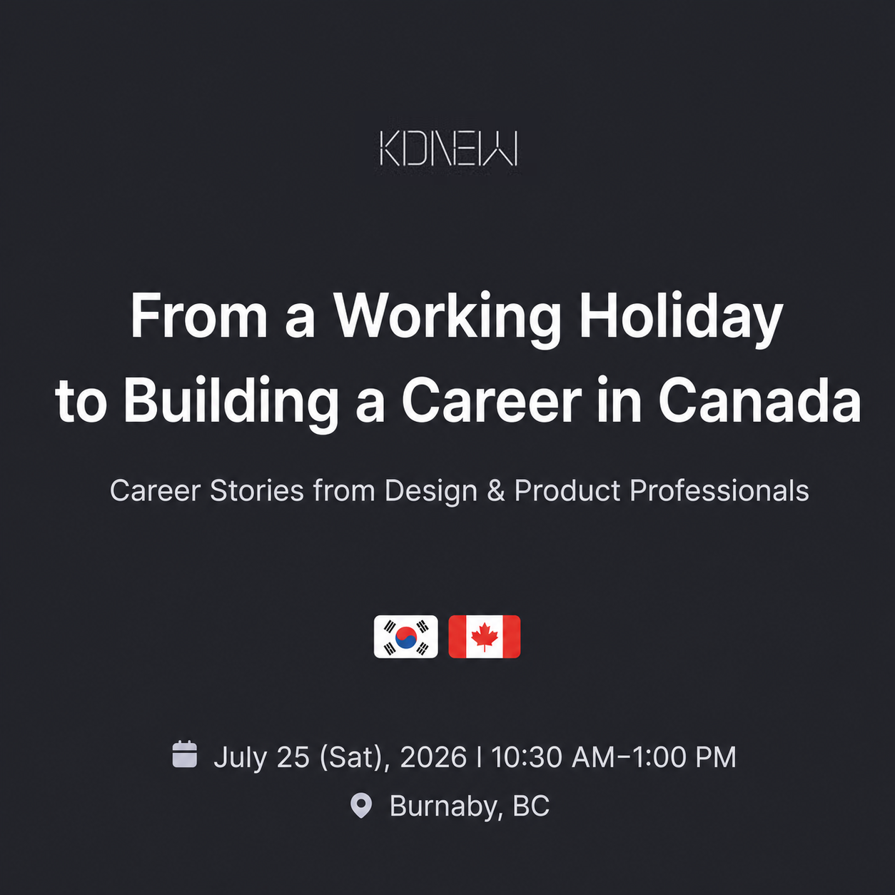

CASponsored by KDNEW · Career Fireside Chat · Jul 2026
Building a Career in Canada on a Working Holiday
I co-hosted a KDNEW-sponsored Career Fireside Chat for people who wanted to start a career in Canada while here on a working holiday. As one of five speakers, I shared why honest self-assessment should come before adopting someone else’s approach.
Co-hostingCareer EntryCommunity
